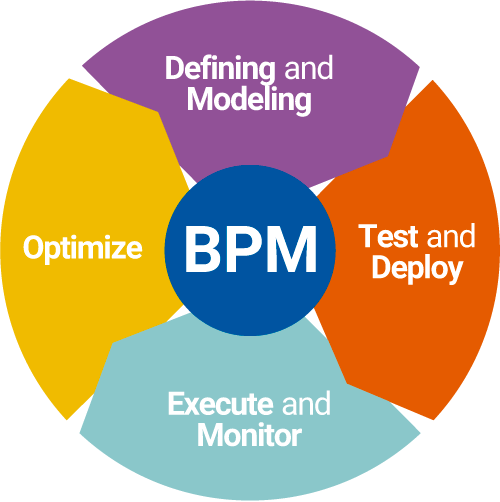

Processes
SoftExpert BPM enables organizations to standardize and automate business processes from beginning to end, improving quality and efficiency while reducing costs, functional silos and response time. It also promotes continual process improvement across the enterprise by monitoring performance of daily business activities, tracking of incidents and deviations and automating change control.